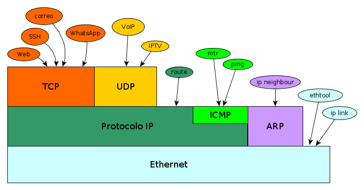
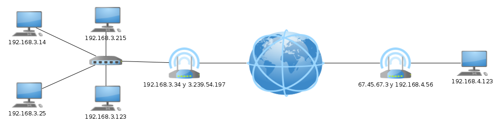
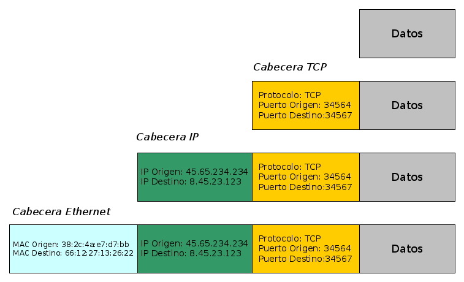
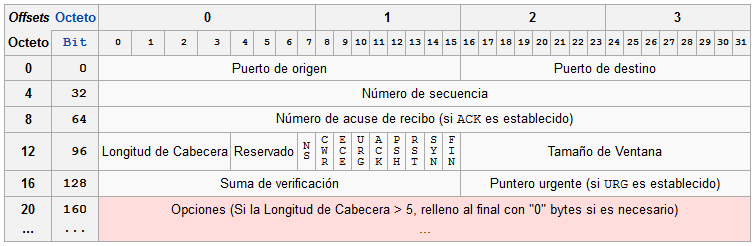
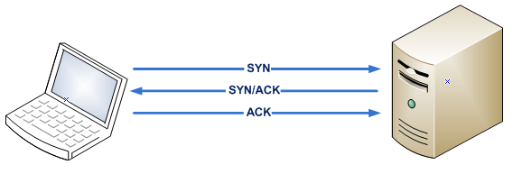
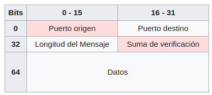

Orain arte ikusitakoaren laburpena egingo dugu, eta, horrela, TCP protokoloa non egokitzen den ikusiko dugu.
Zertarako balio du, orduan, TCP protokoloak? Jakina, IP protokoloak dituen arazoak konpontzeko. Beraz, hauek izango dira TCPren abantailak:
TCP protokoloarekin batera, UDP izeneko beste bat dago, TCPren antzekoa. Bien artean garrantzitsuena TCP da. Eta TCPrako baliagarriak diren gauza asko UDPrako ere baliagarriak dira.

Goiko diagraman, ezagutzen ditugun protokolo guztiak eta horiek erabiltzen dituzten programak ikus ditzakegu. Ikus daitekeenez, TCPk eta UDPk, IPn protokoloa erabiliz lan egiten dute.
Orain arte, ordenagailu batetik bestera komunikatzeko, datuen zati bat, jatorrizko ordenagailuaren IPa eta xede-ordenagailuaren IPa baino ez genituen behar. Baina horrekin ez da nahikoa. Pentsa dezagun gure mugikorrean. Mugikorrera datuak iristen zaizkigunean, zein aplikaziora doaz? Whatsapparako dira? Postarako? Web-nabigatzailerako? eta abar, eta abar. Beraz, datuak nora iristen diren ere zehaztu behar da, zer aplikaziorako diren jakiteko. Hori PUERTO izeneko zenbaki berri batekin egiten da. Zenbaki horrek adierazten du gure ordenagailuaren zein aplikaziotan entregatu behar diren datuak. Baita, portuaz gain, TCP edo UDP bidez doazen ere adierazi behar da. Beraz, konexioa ezartzeko, honako hau behar dugu:
Hori jakinda, ikus dezagun taula bat aplikazio batzuk erabiltzen dituzten portuen zenbakiekin:
| Aplikazioa | Portua | Protokoloa |
|---|---|---|
| SSH | 22 | TCP |
| Serbitzari Web | 80 | TCP |
| Serbitzari Web | 443 | TCP |
| MySQL | 3306 | TCP |
| VoIP | 5060 | TCP |
| VoIP | 5060 | UDP |
| VoIP | 5004 | UDP |
| IPTV | 12000 | UDP |
| Minecraft | 25565 | TCP |
| BitTorrent | 6881 | TCP |
| BitTorrent | 6969 | TCP |
Portu "ofizialen" taula osoa, "portu aski ezagunak" deitzen da, eta Wikipedian ikus dezakezu.
⚠️Portuaren kontzeptua da garatzaile batek ikasi behar duen gauzarik garrantzitsuenetako bat. Izan ere, sareko aplikazio bat programatzean, guk erabakitzen dugu zein portu erabiltzen duen gure aplikazioa. Gainera, askok entzun duzuen bezala, askotan portuak ireki behar izaten dira.
Ondo, baina ez da ahaztu momentuz sareei buruzko kontatutako guztia, ordenagailu batean dagoen prozesu batetik beste prozesu batera datuak bidaltzera bideratuta dagoela.
Adibidez:
Bada, prozesu batek sistema eragileari esan behar dio protokolo batera, portu batera eta IP batera "konektatzen" dela (jakina, ekipoaren beraren IPetara mugatuta). Eta datuak bidaltzen edo jasotzen dituzunean, portu eta protokolo hori erabiliko duzu. Eta, gero, prozesuak datuak bidaliko ditu helmugako portu eta IPa dituen orgenagilu batera (helmugako protokoloa, jakina, jatorrikoaren berdina izango da).
TCP
(IP, Portua) ----------> (IP, Portua)
UDP
(IP, Portua) ----------> (IP, Portua)
⚠️Posible da Mysql eta aplikazio gehienen defektuzko portua aldatzea, baina ez da gomendagarria.
Ikus dezagun orain xehetasun bat. Ziurtzat jotzen dugu edozein ordenagailu konekta daitekeela beste edozein ordenagailurekin. Baina benetan ez da horrela.
Ikus dezagun adibide bat:

Demagun 192.168.3.14 Host-a 192.168.4.123 Host-arekin konektatu nahi dela. Orain badakigu lehenik eta behin garraio-protokoloa aukeratu behar dela:
Demagun TCP protokoloarekin konektatu nahi dugula.
Orain, helburuko ordenagailuaren portua aukeratu behar dugu (192.168.4.123):
Demagun 3306 portura konektatu nahi dugula.
Galdera da, Prozesu bat dago 192.168.4.123 Hosteko 3306 portuan konektatuta? Hau da, beste ordenagailu batera konektatzeko prozesu batek portu horretara konektatuta egon behar du nahitaez, bestela sistema eragileak ez bailuke jakingo zer prozesutara bidali datuak. Izan ere, datuak ez ditugu ordenagailutik ordenagailura bidaltzen, programatik programara baizik. Pentsatu Whatsappean....
Baina bada besterik ere. 3306 portura konektatuta dagoen prozesu hori ENTZUTEN ari dela edo prozesu hori ZERBITZARI bat dela esaten da.
💡 Garrantzitsua da azpimarratzea ez garela ari bezero-ordenagailuez eta zerbitzari-ordenagailuez. Izan ere, ordenagailu berak bezero-lanak eta zerbitzari-lanak egiten dituzten prozesuak izan ditzake. Beraz, egokiena bezero-prozesuei eta zerbitzari-prozesuei buruz hitz egitea da. Hala ere, lengoaia gehiegi erabiltzen dugu eta ordenagailu bat zerbitzaria dela esan ohi dugu, baldin eta garrantzitsuena prozesu zerbitzariak izatea bada, nahiz eta inoiz prozesu bezero bat izan. Bezero eta zerbitzari gisa ere egin dezake, aldi berean, nahiz eta, jakina, ataka desberdinetan.
Itzuli gaitez eskema honetara:
TCP
(IP, Portua) ----------> (IP, Portua)
Orain, datu hauek dauzkagu:
UDP
(192.168.3.14, Portua) ----------> (192.168.4.123, 3306)
Baina oraindik jatorrizko portua jakitea falta zaigu. Bada, jatorrizko portua, ez genuen guk erabaki. Sistema eragileak bezeroarena egin nahi dugunean nahi duen portua esleitzen digu. Pentsa genezake 3306a eduki behar dugula, edo beti berdina izan behar dela, baina pixka bat pentsatzen badugu, berdin dio bezeroak zer ataka duen. Zerbitzariak beti erantzungo digu jatorri-atakari, beraz, berdin dio.
Beraz, jatorrizko ataka gisa suposatuko dugu sistema eragileak 45345 ataka zenbakia esleitzen digula. Orain, azkenik, badugu TCP konexiorako informazio guztia.
UDP
(192.168.3.14, 45345) ----------> (192.168.4.123, 3306)
Azkenik, esan behar da bezeroa zerbitzarira konektatzen hasten den arren, zerbitzaria beti dagoela bezeroren batek konektatu zain. Konexioa ezarri ondoren, bezeroak eta zerbitzariak datuak bidal ditzakete.
Azkenik, TCP protokoloa azalduko dugu. Oso modu errazean ikusiko dugu, oso protokolo konplexua baita.
Lehenik eta behin, adierazi behar da Ethernetek bidaltzen duenari Trama deitzen zaiola, IPk bidaltzen duenari Datagrama , TCPk bidaltzen duenari Segmentu deitzen zaiola.
Orain, gogora dezagun zer egin behar duen TCP protokoloak:
Datuak zein prozesutara bideratuko diren zehazteko, ikusi dugu portuaren kontzeptuak konpontzen duela, prozesu bat ate batera konektatzen baita.
Orain ikus dezagun nola konpontzen dituen gainerako arazoak: TCPn ezartzen den konexio bakoitzean (Gogoratu konexio bat jatorrizko IPren, jatorrizko portua, helmugako IPren, helmugako portuaren arteko lotura dela), bidaltzen dituen segmentuak zenbakituko dira. Horrela, baten bat iristen ez bada, errepikatuta iristen bada edo beste ordena batean iristen bada, TCPk jakingo du.
| Segmentuen iritsiera | Hautemandako arazoa |
|---|---|
| 1, 2, 3, 4, 5 | Bat ere ez. Dena ondo iritsi da. |
| 1, 2, 4, 5 | Galdu egin da 3. segmentua |
| 1, 2, 3, 4, 4, 5 | 4. segmentua bikoiztuta iritsi da |
| 1, 2, 4, 3, 5 | 3. eta 4. segmentuak desordenatuta iritsi dira |
| 3, 1, 4, 4, 5 | 4. segmentua bikoiztuta iritsi da, 2. segmentua galdu egin da, 3. eta 1. segmentuak ordenatik kanpo iritsi dira |
Arazorik izanez gero, TCPk honela konpontzen ditu:
Informazioa gehiago
Irudi honetan ikus dezakegu nola TCPk bere goiburua gehitzen duen IP datuen gainean. Hau da, burualde bat dago segmentuetarako.

Hau da:
Ikus dezagun orain segmentuaren goiburuaren formatua

Hona hemen interesatzen zaizkigun eremuak:

Datuak bidali aurretik, segmentu batzuk bidali behar dira konexioa ezartzeko. SYNC eta/edo ACK bitak aktibatuta dituzten hasierako segmentu horiek gabe, zerbitzariak ez ditu onartuko datu-segmentuak.
💡 TCPrekin amaitzeko, esan dezakegu TCP duten protokolo askoren ondoren lortu dugula datuak prozesu batetik bestera modu fidagarrian bidaltzea, informazioa galdu edo aldatu gabe.
UDP protokoloa TCP protokoloaren oso antzekoa da, beraz, TCPtik azaldu ditugun gauza gehienek UDPrako balio dute. Orduan, zertan bereizten dira?
UDPk arazo hauek konpontzen ez dituenean:
Eta UDPn ez da beharrezkoa konexioa ezartzea/ixtea, hau da, datuak zuzenean bidaltzen dira.
Dena den, datuak zein prozesutara bideratuta dauden zehaztu ahal izango da. Hau da, portuaren kontzeptua UDPn erabiltzen da.
Informazioa gehiago
Orduan, UDPk zertarako balio du IP protokoloaren arazoak konpontzen ez badira?. Beno, esan bezala, badago bat konpontzen dena eta portuari esker datuak zein prozesutara doazen zehaztu ahal izatea.
Ikus dezagun orain UDP goiburua

Ikus dezakegunez, oso sinplea da eta ez du azalpen gehiagorik behar.
Baina aspalditik pentsatu behar duzuna da zertarako balio duen UDPk? Gaizki badabil!!!! Erantzuna oso sinplea da, TCP protokolo oso ona da, baina inplementatzeko oso konplexua da, gainera, gauzak bidaltzean oso motela da. UDP, berriz, oso erraza da programatzeko eta bidalketa oso azkarra da. Beraz, fidagarritasuna galtzen baduzu ere, hobekuntzak ditu azkartasunean.
💡 UDPren azkartasunaren arrazoietako bat da ez duela konexioa ezarri eta itxi behar, beraz, transmisio laburretan denbora asko aurrezten da
Bai, baina azkarrago bada ere, ez duzu inoiz daturik galdu nahi. Beraz, zertarako izan daiteke erabilgarria UDP?
| Aplikazioa | Abantailak | Desabantailak |
|---|---|---|
| Bidali tenperatura mendi batetik gora dagoen sentsore batetik | Datu gutxiago gastatzen ditu eta prozesadore sinpleagoa behar du | Ez da ezer gertatzen noizbait tenperaturaren bat galtzen bada edo desordenatuta iristen bada edo bi aldiz iristen bada |
| Internet bidezko telefonia | Banda-zabalera txikiagoa erabiltzen du | Ez da ezer gertatzen batzuetan gaizki entzuten bada, aurretik zerbait entzuten bada edo ahotsa galtzen bada |
| Bideo-deia Internet bidez | Banda-zabalera txikiagoa erabiltzen du | Ez da ezer gertatzen batzuetan gaizki ikusten bada edo aurreko zerbait ikusten bada edo irudiren bat galtzen bada |
Ikusten dugunez, aplikazio horietan noizbehinkako akatsen bat izanez gero, ez dago arazorik. Gainera, esan behar da, oro har, sareek ez dutela hainbeste huts egiten, beraz, arazo horiek gutxitan gertatuko dira. Baina berriro diot: fidagarritasuna behar badugu, beti erabili beharko da TCP.
1024 datu byte bidaltzen baditugu TCP bidez
1024 datu-byte bidaltzen baditugu UDP bidez
Honako galdera hauei erantzuteko, muga teorikoez hitz egiten dugu beti, eta muga horiek ez daude mugatuta RAM memoria, CPU eta abarrekin.
Egin formula bat, TCP bidez bidali beharreko byte kopuruaren arabera, kalkulatu Ethernetek bidaltzen dituen datuen gutxieneko gainkargaren ehunekoa, konexioa kapsulatzen duten protokolo guztiak kontuan izanda. Adibidez, 10 datu-byte bidali nahi baditugu eta Etherneten bidez 13 datu bidaltzen badira, %30 gainkarga izango litzateke.
Egin formula bat, UDPk bidali beharreko byte kopurua kontuan hartuta, kalkulatu Ethernetek bidaltzen dituen datuen gutxieneko gainkargaren ehunekoa, konexioa kapsulatzen duten protokolo guztiak direla eta. Adibidez, 10 datu-byte bidali nahi baditugu eta Etherneten bidez 12 datu bidaltzen badira, %20 gainkarga izango litzateke.
Egin grafiko bat sortu dituzun 2 formulak ikusteko (TCP eta UDPrako).
Gainkargaren % bakarrik kontuan hartuta, zein kasutan izango litzateke hobe TCP erabiltzea eta zein kasutan izango litzateke hobea UDP erabiltzea?